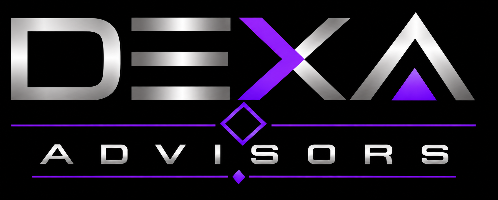

We help organizations adopt AI practically — and govern it responsibly. Starting with the work most advisors skip: understanding how your business actually operates, deciding what must never be automated, and building the governance you need before you can trust AI at scale.
Budget is spent. Tools are trialed. Employees experiment daily — often with no structure, no shared standard for what “good” looks like, and no clear owner for what happens when something goes wrong.
Within a year, most AI pilots are quietly abandoned — not because the technology failed, but because nobody first did the unglamorous work of understanding the real process.
Shadow AI spreads through the organization with no boundaries, no audit trail, and no answer to the question every board will eventually ask: who decided this was safe?
Tool demos and slide decks don't survive contact with a skeptical auditor. Credibility comes from systems that are built, tested, and proven — not presented.
“We don't want AI for the sake of AI. We want a practical roadmap that improves our business. Can you help?”
— THE QUESTION EVERY ENGAGEMENT STARTS WITHEvery engagement is governance-first and evidence-driven — whether we're working inside a finance department or across a whole enterprise.
Practical, sequenced AI roadmaps for any operation — manufacturing, agriculture, services, finance. No AI for AI's sake: every recommendation tied to how your business actually creates value.
Policy, boundaries, and oversight that survive contact with a skeptical auditor. Governance designed in from hour one — not bolted on at the end.
Our deepest operating experience is in treasury and finance — the domain where mistakes cost the most. Proof the method holds where the stakes are highest.
Our method is domain-independent — proven in treasury, agriculture, and operationally complex industries alike.
We map how work actually gets done — not how the org chart says it does. Every recommendation starts from operational truth.
Before anything is built, we define the boundaries: the decisions, payments, and authorizations AI must never touch. A boundary enforced by what a system can do is real; one typed into an instruction is not.
We start with the minimum that solves the problem — tested, working, and governed — rather than the maximum that impresses in a demo.
Every system is tested against failure modes and hostile questions before it earns trust. Evidence over enthusiasm, every time.
Governance that lives in one person's head isn't governance. We leave standing policy so the discipline survives without us in the room.
Dexa Advisors is led by Alex Kalambata — 20+ years at the intersection of finance and technology, including leadership roles in SAP Treasury and Risk Management. He has lived inside the systems most AI advisors only slide-deck about.
Dexa Advisors is the advisory arm of Dexa Ventures, a holding company spanning treasury, agriculture, mining, real estate, and hospitality — the same operating breadth our method was built and tested against.
Our conviction is simple: the advisor who does the unglamorous work first — the process truth, the boundaries, the governance — is the one still standing a year later.
Tell us where your operation hurts — where AI is spreading without governance, or where a practical roadmap is missing. We'll tell you honestly whether we're the right fit.
Book the call